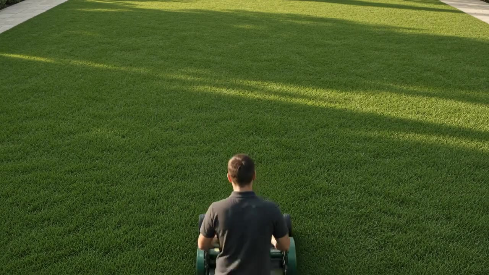

Live
outside.
A considered outdoors, shaped by light, texture and the way you live.

open
AIR LIFE
Place
changes
everything.
Pick a type of outdoor space. Each has a different mood, but one shared idea: make the outside feel personal.

Quiet by design.
Shaded corners, beautiful proportions and a reason to slow down. A considered courtyard makes small spaces feel generous.
More than
greenery.
Light, texture and the way you live. Every choice begins with the place and the people who will call it theirs.
Listen to the place.
What grows here? Where does the evening light fall? What does the family want to do outside?
↗Shape the experience.
Hardscape, planting and pathways are designed to work together, not compete for attention.
↗Make it last.
Care and maintenance can be built into the scope from the beginning, not tacked on later.
↗Before the first sketch.
Do I need a large garden?
The conversation starts with how you want to use the space. A courtyard, a small garden or an outdoor room each offers a different opportunity.
Where does a design begin?
With the place itself: access, light, privacy, the views and what you want to keep. A few photos and a simple sketch are useful starting points.
Can care be part of the plan?
Yes. Discuss the time you want to spend maintaining the space early, so planting and material choices support your everyday routine.